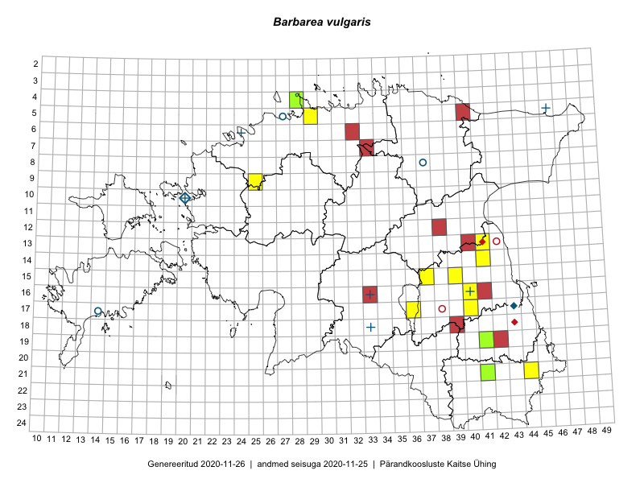

Barbarea vulgaris
Uuendatud: 2016-12-01
Kaardile koondatud taksonid: Barbarea vulgaris R.Br.; Barbarea vulgaris subsp. vulgaris L.

Kaart põhineb 27 kirjel.
Kuvatud viited 20 esimesele andmebaasikirjele, ülejäänud PlutoFis
- Indrek Tammekänd, Liisa Rennel, Agu Leivits, Hannes Pehlak, Irja Tammekänd: 2015-04-27: 15-24: ala
- Indrek Tammekänd, Katrin Aavik: 2015-06-15: 13-25: ala
- Indrek Tammekänd, Jaak Tammekänd, Raivo Endrekson: 2015-06-01: 16-22: ala
- Indrek Tammekänd: 2015-05-31: 14-22: ala
- Indrek Tammekänd, Jaak Tammekänd, Raivo Endrekson: 2015-06-01: 16-23: ala
- Indrek Tammekänd, Jana Galadi: 2015-06-03: 15-22: ala
- Erkki Otsman, Sergei Smirnov: 2015-07-12: 05-29: ala
- Karin Kikas, Elle Rajandu: 2015-04-30: 15-39: ala
- Karin Kikas, Elle Rajandu: 2015-04-28: 14-41: ala
- Indrek Tammekänd: 2015-05-11: 16-26: ala
- Elle Rajandu: 2015-04-27: 16-40: GPS punkt
- Helle Mäemets, Mare Leis: 2015-06-25: 17-36: ala
- Tiina Elvisto, Kadi-Liis Kesler: 2015-05-12: 05-29: ala
- Ulvi Selgis: 2016-05-05: 12-37: ala
- Indrek Tammekänd: 2016-05-10: 20-26: ala
- Indrek Tammekänd: 2016-05-10: 21-26: ala
- Vivika Väli, Ülo Väli: 2015-05-09: 21-41: ala
- Vivika Väli, Ülo Väli: 2015-05-19: 19-41: ala
- Vivika Väli, Ülo Väli: 2015-05-15: 19-41: GPS punkt
- Indrek Tammekänd: 2016-05-28: 08-46: ala